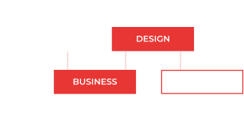

METODOLOGIA iBDD
Focada na comunicação entre a necessidade do cliente e o time de desenvolvimento do produto.
Evite o horror sem fim de lidar com times de tecnologia.
Saiba mais
Focada na comunicação entre a necessidade do cliente e o time de desenvolvimento do produto.
Evite o horror sem fim de lidar com times de tecnologia.
Gestores do tempo da internet discada e que sobreviveram o bug do milênio.
Você não vai precisar falar “tecniquês” para conseguir desenvolver o seu produto.
Com sprints de quinze dias você já tem resultado no seu projeto no curto prazo.
Foque no seu modelo de negócio e deixe sua tecnologia conosco.
Na adolescência você sonhou em ser um rock star, mas o tempo passou e hoje a sua vida é pagar boletos,
enfrentar duas horas de trânsito e trabalhar em uma empresa que não consegue se ver mais nela.
Depois de dois anos trabalhando em casa, você teve que voltar para a vida de escritório
e percebeu que nem uma pandemia conseguiu fazer a transformação digital que seu trabalho precisava.
Todos os dias você fica sabendo de mais um jovem que ficou milionário criando
uma startup que você já tinha tido a ideia com seus amigos antes.Até quando você vai viver essa vida?
Te apoiamos empreender. Somos a experiência em empreendedorismo e tecnologia que sua startup precisa.
HEY HO, LET'S CODE!

Qual será a próxima startup de sucesso que não foi você quem criou?
Tire sua ideia da cabeça e coloque nos celulares de todos os consumidores. Em apenas três meses te damos suporte na estruturação jurídica e no desenvolvimento do produto.
Ajudamos com a ideação, descoberta do modelo de negócio, pesquisa de mercado, prototipação e lançamento da startup.
Entregamos um produto mínimo viável validado e material de apoio para capitação de investimento.
Seu negócio está crescendo porém ainda falta liderança em algum setor? Nós te ajudamos com isso!
GROWTH
Liderança com décadas de experiência na gestão dos times de produtos digitais, marketing e vendas.
TECH
Sabemos o quanto é difícil encontrar um desenvolvedor, ainda mais um gestor. Por isso compartilhamos com nossos clientes.
LEGAL
Preocupado com a LGPD? Precisa criar acordo de sócios e outros contratos? Conte com nossos serviços!
Você sabia que 2/3 das pessoas preferem ir no dentista do enfrentar o gerente do banco? Você já viu o tamanho da concentração bancária brasileira e sua margem de lucro?
O setor financeiro é um dos que mais atrai atenção de investidores.
Wallet, Conta Digital, Cartão de Crédito, Investimentos, Crédito Direto, etc. Duas décadas de experiência de desenvolvimento de produtos digitais mas com a cabeça focada na transformação digital que você precisa.
Não importa a Fintech que vai montar, a HARD CODE é o seu time de tecnologia.
Não acha desenvolvedor para contratar? Desenvolvedor sumiu ou está te traindo com outra empresa? Projeto atrasou?
“Em vez de você ficar pensando nele. Em vez de você viver chorando por ele. Liga pra mim, não, não liga pra ele. “
Empreendedor não sofra mais com isso, fale com um especialista que o seu problema de tecnologia.
Com a metodologia iBDD você sempre vai falar com especialista em gestão de projetos e vai ga
Quando destrinchamos os investimentos do ano por estágio, entendeoms melhor como estes se dividem pelo ecossistema.
O investimento eraly stage, que compreende anjo, pré-seed e seed, recebe a menor fatia do bolo, em parte por se tratar de rodadas menores, mas também porque é uma faixa de investimento considerada de alto risco, visto que essas empresas ainda não possuem reconhecimento no mercado.
Os chamados late stages, referentes às séries A em diante, concetraram a maior parte de
todo o investimento venture capital no país. Esses rounds atraem mais investidores por ser tratarem de empresas maiores, mais consolidadas e por haver mais possbilidades de saída do deal.
Destaque para a enorme quantia na série G, referente a uma única empresa: o Nubank.

Em milhões USD
Fonte: Distrito